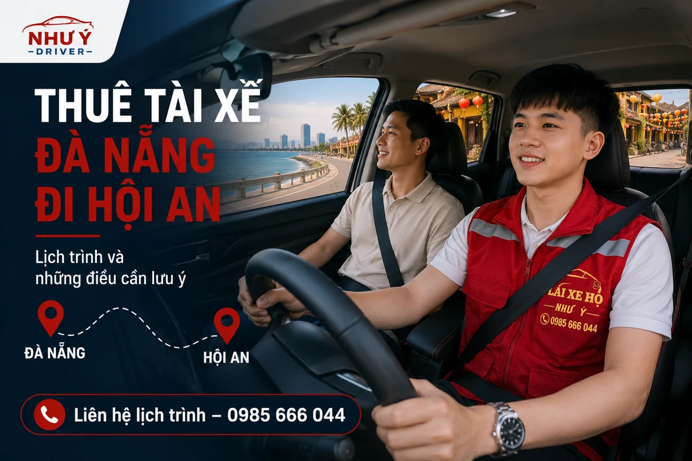

NHƯ Ý DRIVER · HƯỚNG DẪN LỊCH TRÌNH
Thuê tài xế từ Đà Nẵng đi Hội An: chuẩn bị lịch trình và chi phí
Muốn thuê người lái xe riêng cho hành trình Đà Nẵng – Hội An, hãy gửi địa chỉ nhận xe, điểm trả, ngày giờ và nhu cầu một chiều hoặc khứ hồi. Như Ý Driver kiểm tra khả năng nhận lịch rồi trao đổi tổng chi phí theo kế hoạch của bạn.

Trước tiên, xác định bạn cần người lái hay cả xe
Hướng dẫn này dành cho người đã có ô tô và cần tài xế lái thay. Nếu cần cả phương tiện, hãy nói rõ từ đầu; yêu cầu thuê người lái xe riêng không tự bao gồm một chiếc xe đưa đón.
Với xe thuê tự lái, kiểm tra thỏa thuận với bên cho thuê và điều kiện người điều khiển. Đọc các lưu ý khi gọi tài xế cho xe thuê trước khi giao chìa khóa.
Gửi hai điểm gặp cụ thể thay vì chỉ tên địa danh
“Đà Nẵng đi Hội An” chưa mô tả đủ việc nhận và trả xe. Hãy gửi địa chỉ xuất phát, nơi xe đỗ và địa chỉ đích. Nếu điểm muốn đến có điều kiện tiếp cận riêng, hỏi nơi nhận về vị trí dừng được phép và thống nhất một điểm hẹn có thể thực hiện.
Nếu hành khách và xe đang ở hai nơi khác nhau, nêu nơi bàn giao trước. Khi đặt hộ, bổ sung tên và điện thoại của người giữ chìa khóa.
Chọn một chiều, chờ hay quay về cùng ngày
| Thông tin | Bạn nên gửi hoặc hỏi |
|---|---|
| Một chiều | Ai nhận xe và chìa khóa ở điểm đến? |
| Khứ hồi | Giờ về dự kiến, địa chỉ đón lượt về có đổi không? |
| Có chờ | Khoảng chờ, nơi xe đỗ và cách tính thời lượng. |
| Lịch chưa chắc | Nêu khoảng giờ và cách báo lại trước khi chốt. |
Hai yêu cầu có cùng điểm đến vẫn có thể khác chi phí nếu một bên cần người lái chờ và quay về. Vì vậy, hãy gửi cả kế hoạch thay vì chỉ hỏi một đơn giá theo tên tuyến.
Những khoản nên hỏi trước khi nhận báo giá
- Tổng chi phí cho hành trình đã liệt kê.
- Thời lượng phục vụ và phí khi kéo dài.
- Cầu đường, đỗ xe và khoản phát sinh nếu có.
- Điều kiện thay đổi điểm hẹn, thêm chặng hoặc đổi giờ về.
Không có mức phí hoặc thời gian chạy cố định được áp dụng trong bài này. Xem bảng giá chung để phân biệt loại dịch vụ, rồi gửi lịch trình để nhận xác nhận riêng.
Mẫu yêu cầu đặt chuyến đi Hội An
“Mình có xe [dòng xe, hộp số], cần người lái từ [địa chỉ nhận xe] đến [địa chỉ Hội An], đi lúc [ngày, giờ]. Cần [một chiều/khứ hồi], chờ khoảng [thời gian], về từ [điểm nhận lượt về]. Nhờ kiểm tra lịch và báo giá toàn chuyến.”
Gửi qua Zalo hoặc gọi 0985 666 044. Chờ phản hồi về khả năng nhận lịch, thời gian và tổng phí rồi mới xác nhận chuyến.
Điểm trả khách và điểm nhận lượt về có thể khác nhau
Bạn có thể muốn xuống tại một địa chỉ rồi nhận xe ở địa chỉ khác sau buổi hẹn. Nếu vậy, gửi cả hai điểm, thời gian chuyển và ai giữ liên lạc; đừng chỉ ghi tên Hội An cho cả hành trình.
| Phần lịch | Điều cần chốt |
|---|---|
| Kết thúc lượt đi | Xe và người cùng dừng ở đâu; ai nhận chìa khóa nếu chỉ đi một chiều? |
| Trong lúc chờ | Xe đỗ tại vị trí nào được phép, tài xế có chờ cùng lịch không? |
| Lượt về | Giờ và địa chỉ nhận lại khách; các chặng ghé mới nếu có. |
Nếu địa điểm có lối nhận riêng, hỏi người quản lý nơi đó về vị trí xe được phép tiếp cận và cập nhật cho điều phối.
Câu hỏi thường gặp
Làm sao biết ngày tôi cần có tài xế đi Hội An?
Gửi ngày giờ, loại xe và hành trình để Như Ý Driver kiểm tra lịch. Chuyến chỉ được chốt sau khi bạn nhận thông tin xác nhận phù hợp.
Chưa biết giờ về có hỏi trước được không?
Có thể gửi khoảng giờ dự kiến và nêu phần lịch chưa chắc để trao đổi cách tính, cách cập nhật.
Điểm trả khác với nơi đón về cần báo không?
Có. Gửi đủ hai địa chỉ để người lái và điều phối nắm đúng hai lượt.
Thông tin liên quan
Trao đổi chuyến đi với Như Ý Driver
Gửi điểm đón, điểm đến, loại xe và giờ đi để kiểm tra lịch. Chuyến được xác nhận sau khi hai bên thống nhất khả năng phục vụ, thời gian và chi phí.